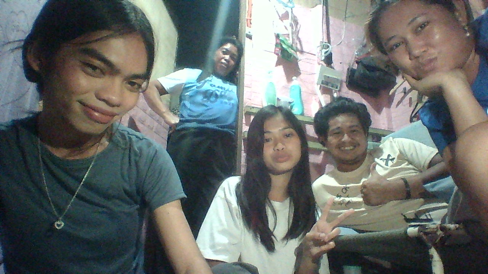

12-Alcaraz
Catarman, Liloan, Cebu
09949436799
shanevisoc@gmail.com
June 11, 2009
Catarman Elementary School
Catarman Integrated School
Informatics College Cebu
Britech College
My expectation for this school year is to learn more and grow. Not just for academic but also for character and leadership. As a Grade 12 student I want to develop my learning skills and hoping that this school year would be memorable. I expect that I would enjoy learning and have some fun of my clasmmates. May this school year bring us happiness, excitement and memorable year.
Watching movies
Eating
Sleeping
Playing instrument
Listening to music
Travelling